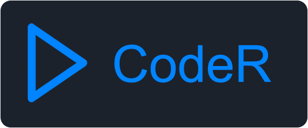
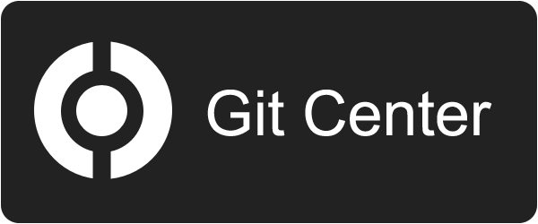

Resource for Java game programming
My development resources
My GitHub repository on the clearnet.Development resources on ZeroNet
Join the devs and follow what they're up to on 0DevTalk. Forum for programmers and enthusiasts alike.CodeR is a decentralized version of JSfiddle/CodePen. If you're into web development this is probably the place for you to test your code.

Git Center is a decentralized hosting platform equivalent to GitHub. It's a little different from GitHub's interface, but still works pretty well.

IFS is a file sharing platform for audio, video, images, games and books.